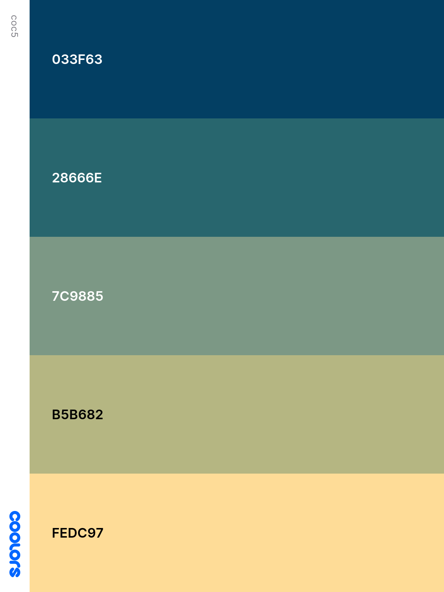
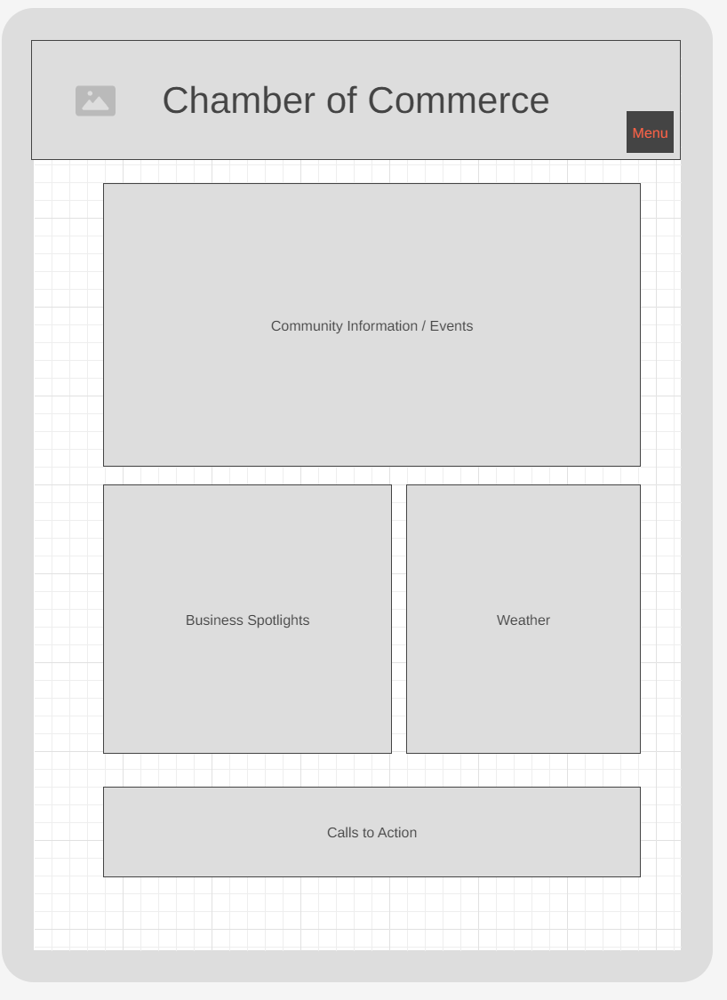
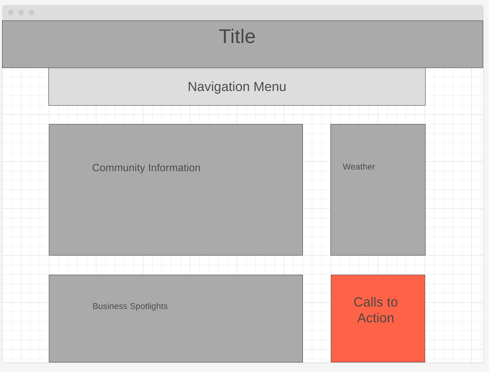

Site Name:
Aunu'u Chamber of Commerce
Site Purpose:
THe Aunu'u Chamber of Commerce aims to bring together locally owned businesses to promote and advocate their interests. In addition, through networking and collaborating, business environments can be improved and communities are strengthened.
Scenarios:
What events are happening in the community?
Where can I find contact information for local businesses?
What benefits are there for joining the chamber of commerce and how do I join?
Color Schema

My primary color for my design will be the blue (#033F63) which will be used in the header box as well as throughout the page in various boxes. I will then use the dark green (#28666E) as a secondary color for decorative elements and the light yellow as a contrasting color to highlight things or boxes that I want to pop out. My background color is aliceblue, font color is black except for text within the dark blue to which I will change the font to match the background.
Typography
Cinzel
The Cinzel font will be used for my main headings such as the h1 and h2 titles. They will be a little heavier to contrast with the light weight of the body font.
Mako
The Mako sans-serif font will be used mainly as my body font for any text within the body.
Wireframe
Mobile

Desktop
